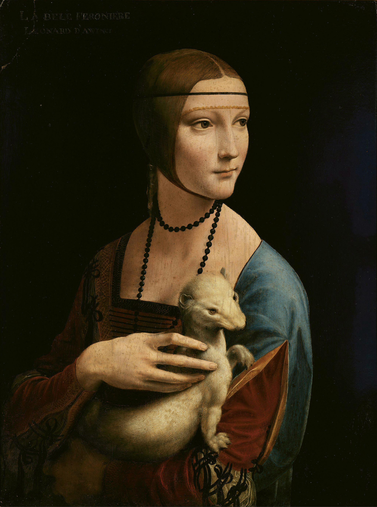

Transforming portraiture: capturing a presence

An event beyond the frame
What is Cecilia looking at? Has someone just entered? The painting gives no answer, but invites us to imagine an event beyond the frame.
A moment captured
Compare the direction of her torso and head. Her face turns; her gaze moves elsewhere. The ermine echoes this movement, while her hand connects the animal to the young woman. These differing directions give the portrait the sense of a moment unfolding.
A new presence in portraiture
Female profile portraits were common in 15th-century Italy. Leonardo did not invent the three-quarter view single-handedly, but used the body’s changing directions to give his sitter an exceptionally lively presence.
Likeness remains essential. Here it is accompanied by attention that seems to awaken: we look at a person who is also looking.
Take a closer look
Briefly hide the ermine with your hand, without touching the screen. Then look at the whole picture again. How does the animal change your perception of movement?